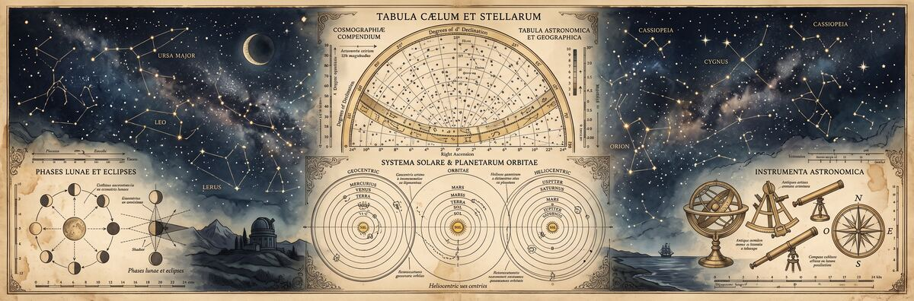

Research & Methodology
The territories documented in this atlas were identified through a process of systematic cross-referencing of first-person dream reports collected over an unspecified period. A territory enters the catalog only upon meeting a single criterion: independent description by at least three separate dreamers who have had no opportunity to compare notes beforehand.
This threshold is deliberately conservative. Dream reports are notoriously unreliable — contaminated by waking reconstruction, narrative expectation, and the inherent tendency of memory to fill gaps with plausible material. Even with corroborating accounts, the cartographer must resist the temptation to treat any entry as settled geography. All coordinates are approximations. All descriptions represent a synthesis of varied accounts. Where accounts conflict, the majority position is recorded and the minority noted in footnotes not reproduced here.
"The problem with dream cartography is not the lack of data. It is that the territory changes when observed, and the observer changes upon returning."
Interview protocols prioritize spatial description (layout, scale, materials, lighting) before affective content, to minimize contamination of objective data with emotional interpretation. Dreamers are asked to describe what they saw, heard, and touched before being asked how they felt. The affective content is recorded but held in separate notes not reproduced in atlas entries.
The appearance of matching details across independent accounts does not necessarily indicate a shared territory. Human dreaming draws from a common pool of cultural imagery; a submerged library and an inverted city are both legible archetypes. What distinguishes a mapped territory from a shared archetype is the presence of specific incidental details — a particular crack in a particular wall, the exact placement of a counter, the specific angle at which light enters a room — that could not be derived from the archetype alone and that multiple dreamers reproduce independently.
Dream territories are classified along two axes: their primary substrate (what kind of environment they are) and their anomaly class (the primary departure from waking-world logic).
| Class | Substrate | Primary anomaly | Example territories |
|---|---|---|---|
| Class I | Natural landscape | Material transmutation or scale anomaly | Glass Forest, Salt Flats Oracle, Honeycomb Cliffs |
| Class II | Urban / built environment | Geometric or physical law violation | The Inverted City |
| Class III | Institutional / transitional | Liminal function or temporal anomaly | Drowned Library, Station of Forgotten Trains |
Subclasses (I-A through I-C, II-A, III-A through III-B) refine the primary classification according to secondary features. A territory may be reclassified upon accumulation of new reports; SA-001 (Glass Forest) was originally classified II-A before sufficient natural-substrate reports established the current classification.
Several phenomena appear across multiple territories with sufficient consistency to warrant separate documentation. These are not anomalies unique to a single location but rather features of the dreaming environment that manifest in various territories.
Populated territories (most prominently SA-002, the Inverted City) exhibit a consistent pattern: figures are present and apparently engaged in normal activity when observed from a distance or peripherally, but disperse or become unreachable upon direct approach. No territory has produced a sustained, reciprocal interaction between a dreamer and a territorial inhabitant. All encounters are one-directional.
Several territories, particularly Class I sites with extensive horizontal extent (SA-005), exhibit what has been termed the "horizon constant": a specific feature — a figure, a structure, a boundary — that maintains a fixed apparent distance regardless of the dreamer's movement toward it. Movement away is unaffected. The phenomenon is not reciprocal.
Territories SA-003 and SA-001 exhibit responsiveness to dreamer intention or attention. In the Drowned Library, text reorganizes to address an implicit query. In the Glass Forest, acoustic information appears calibrated to the listener. The mechanism is unknown; the response is consistent across independent accounts.
All territories share the feature of a "waking threshold" — a point or action that terminates the dream. In some territories this is geographic (reaching an edge or boundary). In others it is behavioral (attempting to record information, looking directly at a light source, speaking aloud). The thresholds are territory-specific and are documented in each entry's supplementary notes.
"A recurring territory is not a place you return to. It is a place that returns to you."
Practical guidance for dreamers who wish to navigate documented territories with greater intention. These notes are based on aggregate first-person reports and cannot be considered reliable in the conventional sense.
Entry into a specific territory cannot be reliably induced. Documented conditions that correlate with entry include: familiarity with the territory's documented features (reading this atlas may, paradoxically, increase encounter probability), mild physical temperature reduction before sleep, and a period of pre-sleep attention to horizontal landscapes. None of these constitutes a reliable method.
Upon entry, experienced territory visitors recommend a brief period of stillness before movement — thirty seconds to several minutes — to allow the territory's specific logic to become apparent. Each territory operates by rules that can be inferred through observation but not through assumption. Applying waking-world assumptions to territories with non-Euclidean geometries (SA-006) or gravity anomalies (SA-002) produces disorientation that can truncate the visit.
Attempts to document territories while within them — writing, drawing, photography, audio recording — consistently trigger early termination of the dream. The mechanism is not understood. It is recommended to prioritize direct experience over documentation during the visit, and to commit observations to written record immediately upon waking.
| Term | Definition |
|---|---|
| Anchor feature | A consistent, specific element that identifies a territory across independent accounts. Functions as the primary point of corroboration. |
| Dream coordinate | A positional notation for a territory, expressed in degrees of latitude and longitude as an approximation only. No spatial relationship to waking-world geography is implied. |
| Horizon constant | A territory feature that maintains fixed apparent distance regardless of the dreamer's movement toward it. See Section III. |
| Liminal territory | A territory that functions primarily as a transitional space — neither origin nor destination — and that resists purposeful traversal. Class III territories are predominantly liminal. |
| Oracle territory | A territory that appears to affect the dreamer's understanding of a waking-life problem without providing explicit information. SA-005 is the clearest example. |
| Population dispersion | The phenomenon by which territorial inhabitants are present at a distance but absent upon approach. See Section III. |
| Recurring territory | A territory entered by the same dreamer across multiple separate sleep periods. Recurrence is reported in all six documented territories. |
| Responsive territory | A territory that exhibits apparent sensitivity to dreamer attention, intention, or need. Classes I and III show the highest incidence of responsiveness. |
| Waking threshold | The condition or action that terminates a visit to a territory. Territory-specific; not cross-applicable. |